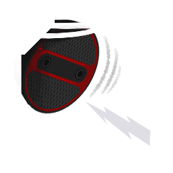
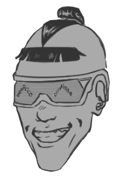
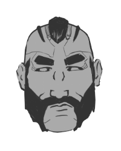
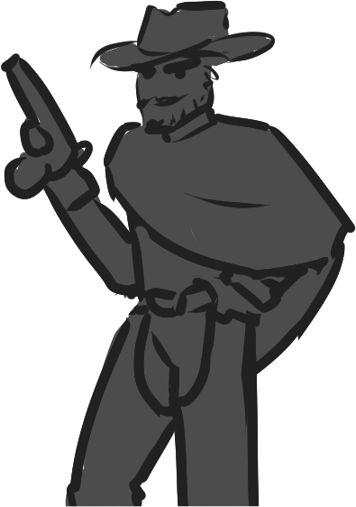

Round 2, kiddies! The first round had its thrills, chills and spills, Let’s see what Round 2 holds for us.

[[Next|Intro2]]
Personally, I’m hoping for Grills. I’m starving

[[Next|Intro3]]
Just like you to want to light something on fire, Chuck!
[[Next|Intro4]]
Anyways, the second round has us move closer to the city center. More people, more buildings, more chances for Maaaaaayheeeeeem!
[[Next|Intro5]]
But our brave contestant had better watch out! Our hunters are hot on their tail, and given the substantial bounty they’ve racked up so far, our hunters have plenty of incentive to bring them down!
[[Next|Intro6]]
But if they use that gorgeous little melon of theirs, they may yet stay one step ahead of the hounds! Can Our contestant cause enough damage and rack up enough Dollary-doos to come out on top? Find out on round two of...
[[Next|Intro7]]
MAYHEM FOR MONEY!
[[Next|ChoiceIntro1]]
Just looking about the street that you're on, a couple of options for criminal activities come to your mind. Keeping in mind that you're being chased and you want to gain as much of a bounty as possible, you weigh your options.
[[Next|Choice1]]
[[Mug the vulnerable-looking pedestrian|Mugging1-1]]
[[Break into the apartment with an open window|Burglary1-1]]
It looks as though there's nobody else nearby, aside from the incoming woman. You slump against the wall casually, as though you're just idling on the street. She continues to approach, purse in hand, chattering to somebody on the other end of her tele-chip. She doesn't even seem to notice your presence.
[[Next|Mugging1-2]]
This... feels wrong. You take a breath and remind yourself that you need to do this for your family.
[[Next|Mugging1-3]]
As she passes by, you grab her wrist and throw her against the wall. She gasps, instinctively putting her hands up in surrender, but doesn't scream. At a glance, you can see the fear in her eyes.
[[Next|Mugging1-4]]
Without saying a word, you yank the purse off of her arm. She doesn't fight it; just whimpers a little, her eyes flickering to the camera drones above you.
[[Next|Mugging1-5]]
Your heart leaps into your chest as you hear a voice on the other end of the tele-chip, escalating in pitch. It's only a matter of time before this woman starts talking.
[[Next|Mugging1-6]]
Your legs move before you have a chance to consider your next action. You run; street after street until you're out of breath, finally pausing to catch your breath in an alley.
[[Next|ChoiceIntro2]]
You cautiously approach the open window. It seems to be silent inside. It doesn't take much to slide the window up a bit more, but you suppress a wince as it squeaks a bit.
[[Next|Burglary1-2]]
It's still silent inside. Slowly, you heave yourself to the sill and climb inside. The drones following you zip through after you.
[[Next|Burglary1-3]]
You take a minute looking carefully in case someone's here, but remind yourself not to take too long as you're still being pursued.
[[Next|Burglary1-4]]
Thankfully, it looks as though whomever lives here is not at home and just left their window open, so you're able to take your time and search the apartment for anything expensive.
[[Next|Burglary1-5]]
You are able to find a good amount of money stashed under the mattress in an envelope marked “Rainy Day Fund” and stash it in your jacket.
[[Next|Burglary1-6]]
Returning to the window, you try not to look at the wall of pictures featuring two young children. The drones don't share your sense of guilt.
[[Next|Burglary1-7]]
As your feet hit the sidewalk, a car pulls up. You move without thinking, breaking into a sprint. Street after street, you run until you're out of breath, finally pausing to catch your breath in an alley.
[[Next|ChoiceIntro2]]
Double-click this passage to edit it.
Stepping out to the quiet street, still breathing heavily, you look about for your next course of action.
[[Next|Choice2]]
[[Mug the thin, scrappy-looking kid tagging a building|Ramon1-1]]
[[Break into the nearby vehicle and steal any valuables|Ramon1-1]]
[[Rob the grocer with an empty parking lot|Ramon1-1]]
As you begin to take a step, you hear the familiar click of a pulse revolver being cocked from right behind you. Your heart stops and you freeze.
[[Next|Ramon1-2]]
Let's see them hands o' yers like yer tryin'a give the lord above a back scratch... slowly, now. Ya don't want to scare mah trigger finger now, do ya?
[[Next|Ramon1-3]]

You obey, turning slowly, hands raised. Behind you stands a man who could have easily walked right out of one of those old western films.
[[Next|Ramon1-4]]
You led me on quite the chase didn’t you? I respect ye for that moxie, but I do always get my mark.
[[Next|Ramon1-5]]
He winks, and you frantically run through your options. Fuckin' bounty hunters.
[[Bribe Him|bribe-success1]]
You stutter a bit as you offer the man a chunk of your bounty. 10%...
[[Next|bribe-success2]]
Your breath hitches as you use subtle sign language to suggest 10% of your success. To your comfort, his eyebrows raise and he whistles low.
[[Next|bribe-success3]]
10% of yer final payout? Shoot, you must be REAL desperate, huh?
[[Next|bribe-success4]]
He holds out his other arm, palm down, dispaying the screen input on his forearm. You nod, slowly lowering your hands to access your own, bringing up the account and setting a pending transfer of 10%.
[[Next|bribe-success5]]
He nods, lowering his weapon and locking the transfer. Your heart rate lowers as the weapon gets holstered. Suddenly, he stumbles backwards, hand over his eyes.
[[Next|bribe-success6]]
You god-darn snake-in-the-grass! It’ll take me at least FIVE MINUTES to clear out all that sand you THREW IN MY EYES.
[[Next|bribe-success7]]
You don’t wait around to see him wink between his fingers. Within seconds, you're well out of sight, pursued by a few cam-drones.
[[Next|ChoiceIntro3]]
You slow down under a lightway bridge. Never thought you'd run this much for a TV show. Looking about, you take note of your current options.
[[Next|Choice3]]
[[Mug the rich couple chatting over a stroller|Mugging3-1]]
[[Break into the tech shop|Burglary3-1]]
You approach the couple, trying to stay as out-of-sight as possible. A length of rusted pipe catches your eye and you grab it.
[[Next|Mugging3-2]]
The woman notices you a few paces away and gasps, startling the young man. You brandish the pipe as he spins around.
[[Next|Mugging3-3]]
You make a vague threat to the both of them and imply that the child won't survive unless they hand over their cash. They do so immediately, the woman beginning to hyperventilate.
[[Next|Mugging3-4]]
You back away, one hand curled around their belongings, the other still brandishing the pipe. At a reasonable distance, you turn and drop the pipe, breaking into a run.
[[Next|Outro1]]
The building looks all but abandoned, boards covering the only window under the broken neon sign. “Nelly’s Naughting Networking Nook”. You haven't even heard of this place.
[[Next|Burglary3-2]]
Kicking aside the fake rock outside the door reveals a key, which you quickly discover works perfectly in the lock. You half-expect an alarm to sound as the door swings open in front of you, but you hear nothing.
[[Next|Burglary3-3]]
Looking about, you see a good amount of expensive hardware laying around, but most is far too big to carry out. There look to be some boxes behind the counter, though.
[[Next|Burglary3-4]]
You pocket some expensive processors you can take with you and a small amount of cash from the register before checking the tiny office in the back.
[[Next|Burglary3-5]]
Rummaging through the drawers, you find a few flash drives with various vaguely hazard-looking markings on them. You're not entirely sure what they are, but you doubt it’s anything good. Could be useful, so you stash them in your pocket and make your way out.
[[Next|Outro1]]
Double-click this passage to edit it.
<% s.speaker = true %>
And there you have it! Looks like our contestant is holding back a bit, but hanging on!
[[Next|Outro2]]
<% s.speaker = true %>
Just about thought they were about to fail when that hunter showed up, but it looks like they got some wits.
[[Next|Outro3]]
<% s.speaker = true %>
They're performing pretty well, but I suspect they'll have to take a few more drastic risks in the next round if they REALLY want to perform.
[[Next|Outro4]]
<% s.speaker = true %>
Definitely, definitely. I'll be honest though, things have been a little boring so far.
[[Next|Outro5]]
<% s.speaker = true %>
Haha! Now, now, cool your thrusters, grump'ums! I mean, they might just be waiting until the end to really pull out the stops!
[[Next|Outro6]]
<% s.speaker = true %>
Let's hope so. Join us to find out after these messages from our sponsors!
[[Next|End]]
Thank you for playing!